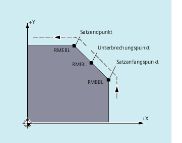
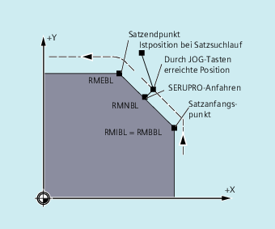
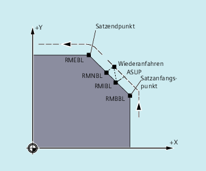
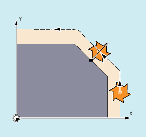

Bezogen auf den NC-Satz, in dem der Programm-Ablauf unterbrochen wurde, können Sie zwischen drei Wiederanfahrpunkten wählen:
RMIBL, Unterbrechungspunkt
RMBBL, Satzanfangspunkt bzw. letzter Endpunkt
RMEBL, Satzendpunkt

Mit RMIBL DISPR=... bzw. mit RMEBL DISPR=... können Sie einen Wiederanfahrpunkt festlegen, der vor dem Unterbrechungspunkt bzw. vor dem Satzendpunkt liegt.
Mit DISPR=... beschreiben Sie den Konturweg in mm/inch, um den der Wiederanfahrpunkt vor dem Unterbrechungs- bzw. Endpunkt liegt. Dieser Punkt kann - auch für größere Werte - maximal im Satzanfangspunkt liegen.
Wird kein DISPR=... programmiert, gilt DISPR=0 und damit der Unterbrechungspunkt (bei RMIBL) bzw. der Satzendpunkt (bei RMEBL).
Das Vorzeichen von DISPR wird ausgewertet. Bei positivem Vorzeichen ist das Verhalten wie bisher.
Bei negativem Vorzeichen wird hinter dem Unterbrechungspunkt bzw. bei RMBBL hinter dem Startpunkt wieder aufgesetzt.
Der Abstand Unterbrechungspunkt-Aufsetzpunkt ergibt sich aus dem Betrag von DISPR. Dieser Punkt kann auch für betragsmäßig größere Werte maximal im Satzendpunkt liegen.
Durch einen Sensor wird die Annäherung an eine Spannpratze erkannt. Es wird ein ASUP ausgelöst, mit dem die Spannpratze umfahren wird.
Anschließend wird mit negativem DISPR auf einen Punkt hinter der Spannpratze repositioniert und das Programm fortgesetzt.
Wird bei der Bearbeitung an einer beliebigen Stelle ein Abbruch erzwungen, dann wird mit SERUPRO-Anfahren unter RMNBL der kürzeste Weg von der Abbruchstelle angefahren, um anschließend nur den Restweg abzuarbeiten. Dazu startet der Anwender ein SERUPRO-Vorgang auf den Unterbrechungssatz und positioniert mit den JOG-Tasten vor die schadhafte Stelle des Zielsatzes.
| Hinweis |
SERUPROFür SERUPRO ist RMIBL und RMBBL identisch. RMNBL ist nicht nur auf SERUPRO beschränkt, sondern allgemein gültig. |
Zum Interpretationszeitpunkt von REPOSA wird nach einer Unterbrechung der Wiederanfahrsatz mit RMNBL nicht noch einmal komplett begonnen, sondern nur der Restweg abgearbeitet. Es wird der nächstliegende Bahnpunkt des unterbrochenen Satzes angefahren.
Der gültige REPOS-Mode des unterbrochenen Satzes kann über Synchronaktionen mit der Variablen $AC_REPOS_PATH_MODE gelesen werden:
0 | Anfahren nicht definiert |
1 | RMBBL: Anfahren auf den Beginn |
2 | RMIBL: Anfahren auf den Unterbrechungspunkt |
3 | RMEBL: Anfahren auf den Satzendpunkt |
4 | RMNBL: Anfahren auf den nächstliegenden Bahnpunkt des unterbrochenen Satzes |
Falls Sie den Programmablauf wegen Werkzeugbruch gestoppt haben:
Mit Programmierung der neuen D-Nummer wird das Programm ab Wiederanfahrpunkt mit den geänderten Werkzeugkorrekturwerten fortgesetzt.
Bei geänderten Werkzeugkorrekturwerten kann der Unterbrechungspunkt möglicherweise nicht mehr angefahren werden. In diesem Fall wird der dem Unterbrechungspunkt nächstgelegene Punkt auf der neuen Kontur angefahren (gegebenenfalls um DISPR modifiziert).
Die Bewegung, mit der das Werkzeug wieder an die Kontur heranfährt, ist programmierbar. Die Adressen der zu verfahrenden Achsen geben Sie mit Wert Null an.
Mit den Befehlen REPOSA, REPOSQA und REPOSHA werden automatisch alle Achsen repositioniert. Es ist keine Achsangabe notwendig.
Bei Programmierung von REPOSL, REPOSQ und REPOSH fahren alle Geometrieachsen automatisch, also auch ohne Angabe im Befehl, an. Alle anderen Achsen müssen im Befehl angegeben werden.
Der Kreis wird in der angegebenen Arbeitsebene G17 bis G19 gefahren.
Falls Sie im Anfahrsatz die dritte Geometrieachse (Zustellrichtung) angeben, wird der Wiederanfahrpunkt für den Fall, dass Werkzeugposition und programmierte Position in Zustellrichtung nicht übereinstimmen, auf einer Schraubenlinie angefahren.
In folgenden Fällen wird automatisch auf lineares Anfahren REPOSL umgeschaltet: